Mostrando 30 personajes certificados
Fidelidad filológica a Tadao Nagahama (1978)
Tierra • Base Daimobic
Ep. 1 a 44
竜崎 一矢 (Kazuya Ryūzaki)
Kazuya Ryūzaki
Piloto Titular de Daimos • Campeón de Kárate
Atril: Ataques de voz secos y directos procedentes del hara (abdomen). En combate proyecta fiereza marcial pura sin descontrolar agudos; con Erika, el tono se vuelve íntimo, roto por la tragedia y lírico.
Settei de diseño oficial (Norio Shioyama, 1978)
Imperio Baam • Pacifista
Ep. 1 a 44
エリカ (Erika)
Princesa Erika
Princesa Imperial de Baam • Fundadora de la Resistencia
Atril: Timbre dulce y afligido pero con sólida columna de aire. No es sumisa: transmite la carga de una culpa involuntaria y una pureza sagrada dispuesta al autosacrificio.
Celuloide original de producción Toei Animation
Imperio Baam • Alto Mando
Ep. 1 a 44
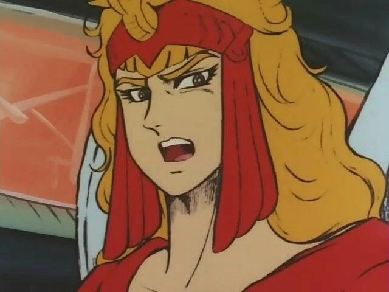
リヒテル提督 (Richter)
Almirante Richter
Comandante en Jefe de las Fuerzas de Ataque a la Tierra
Atril: Cúspide del villano romántico de Nagahama. Declamación shakespeariana, nobleza herida, dolor filial permanente. Nunca un matón vulgar: su tragedia nace del amor a su padre asesinado.
Celuloide de producción Toei / Roman Album #16
Tierra • Base Daimobic
Ep. 1 a 44
夕月 京四郎 (Kyōshirō Yūzuki)
Kyōshirō Yūzuki
Piloto As del Galva FX-II • Maestro Espadachín
Atril: Actitud relajada, irónica y callejera (estética afro-samurái). Suele citar aforismos antiguos. Cínico en la base, pero con filo mortal y templanza en combate.
Settei de diseño oficial (Sunrise, 1978)
Tierra • Base Daimobic
Ep. 1 a 44
和泉 ナナ (Nana Izumi)
Nana Izumi
Copiloto del Galva FX-II • Francotiradora de Élite
Atril: Energía viva, picante (16 años). Berrinches cómicos imitando ladridos ('¡Wan!'), pero con profundo desgarro ante el desamor y máxima frialdad con el rifle láser.
Model Sheet Toei Dōga (1978)
Tierra • Base Daimobic
Ep. 1 a 44
和泉 振一郎博士 (Dr. Shin'ichirō Izumi)
Dr. Shin'ichirō Izumi
Comandante General de la Base Daimobic • Maestro Zen
Atril: Gravedad reposada y aplomo de maestro marcial. Frente al General Miwa, su autoridad moral inapelable debe aplastar la histeria castrense.
Celuloide de producción Nippon Sunrise
Tierra • Prólogo / Lunar
Ep. 1 (Recurrente en Flashback)
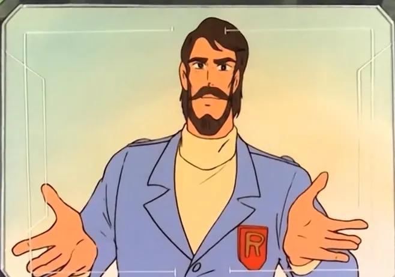
竜崎 勇博士 (Dr. Isamu Ryūzaki)
Dr. Isamu Ryūzaki
Fundador de Daimobic • Creador de Daimos • Mártir
Atril: Timbre cálido, visionario e imponente. En los recuerdos debe sonar como el testamento de la hermandad entre los pueblos.
Settei oficial Norio Shioyama (1978)
Ejército Terrestre • Mando Supremo
Ep. 1 a 43
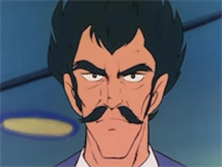
三輪 防人長官 (General Sakamori Miwa)
General Sakamori Miwa
Comandante en Jefe de las Fuerzas de Defensa de la Tierra
Atril: Abrasivo, fanático, chovinista. No caricaturizarlo: su peligro real estriba en que posee los cañones y la ley militar de su lado.
Telecine 35mm Toei / Emisión AT-X
Imperio Baam • Ejército Expedicionario
Ep. 1 a 35
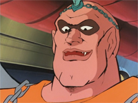
猛将バルバス (Barubasu)
General Balbas
Comandante Táctico • Vasallo de Honor de Richter
Atril: Rocoso, imponente, con honor espartano impenetrable. Sus lamentos ante las bajezas de Olban deben conmover.
Celuloide original Toei Dōga (1978)
Imperio Baam • Estado Mayor
Ep. 1 a 42
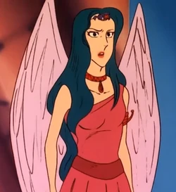
ライザ (Raiza)
Marquesa Raiza
Científica Diseñadora de Mecha-Bestias de Baam
Atril: Sofisticada, gélida, calculadora. Mezcla intelecto científico despiadado con amor obsesivo hacia Richter.
Settei de vestuario Norio Shioyama (1978)
Pequeño Baam • Regente Usurpador
Ep. 1, 5, 34 a 44
オルバン大元帥 (Emperor Olban)
Gran Mariscal Olban
Soberano Usurpador de Pequeño Baam • Conspirador
Atril: Untuoso y viscoso. Modula de la falsa piedad paternal a la furia sanguinaria. Risa sardónica helada.
Model Sheet oficial Toei Dōga
Imperio Baam • Trono Legítimo
Ep. 1 (Flashbacks en Ep. 5 y 17)
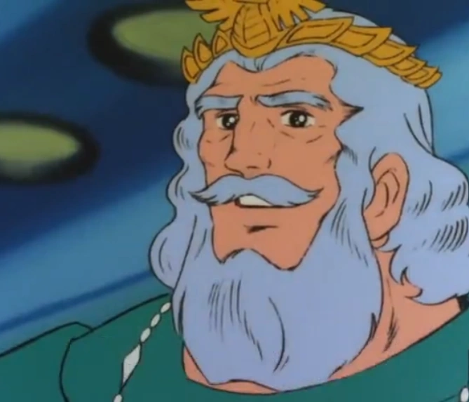
リオン大元帥 (Emperor Leon)
Gran Mariscal Leon
Soberano Supremo Original de Baam • Padre de Richter y Erika
Atril: Majestuoso y cargado con el cansancio del éxodo estelar. Su agonía pidiendo paz debe conmover el estudio.
Celuloide oficial Toei Dōga (Episodio 1)
Tierra • Base Daimobic
Ep. 1 a 44
おかねさん (Okane-san)
Doña Okane
Ama de Llaves y Matriarca Doméstica de Daimobic
Atril: Fuerza vocal rústica y cómico-popular (ataques con sartenes) que transita a una ternura maternal conmovedora.
Celuloide original Nippon Sunrise (1978)
Tierra • Base Daimobic
Ep. 12 a 44
元太 (Genta)
Genta
Aprendiz Travieso • Mascota Infantil de la Base
Atril: Descarado, espontáneo, callejero. Sin amaneramientos: un pilluelo que adora el kárate pero sufre el impacto de la guerra.
Model Sheet de expresiones Sunrise (1978)
Tierra • Soporte Mecánico
Ep. 1 a 44
カイロ (Kairo)
Cairo
Robot Auxiliar de Operaciones y Alerta Temprana
Atril: Tono quejumbroso y cantarín con modulación electrónica ligera en sala. Interpretación de base muy orgánica.
Cel de producción Toei Dōga (1978)
Imperio Baam • Corte Real
Ep. 1 a 16
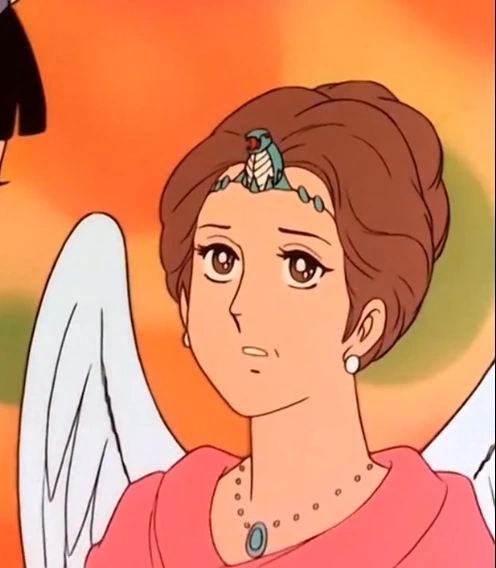
マルガレーテ (Margarete)
Margarete
Nodriza Real de la Dinastía Leon • Confidente de Erika
Atril: Timbre señorial, lleno de sabiduría antigua y abnegación. Es la única persona capaz de encarar a Richter con la autoridad de una madre para frenar sus accesos de cólera. Su martirio requiere una entereza desgarradora.
Celuloide de producción Toei Video / Master broadcast
Imperio Baam • Élite Científica
Ep. 26 a 28
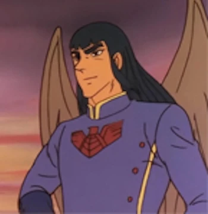
アイザム (Aizam)
Dr. Aizam
Científico Supremo • Creador del Metal Hiperelástico
Atril: Elegancia terminal y decadente. Oculta una dolencia fatal mientras agota sus fuerzas creando armas para Richter.
Celuloide original Toei Animation / Tokuma Roman Album #16
Imperio Baam • Honor de Armas
Ep. 9 y 17
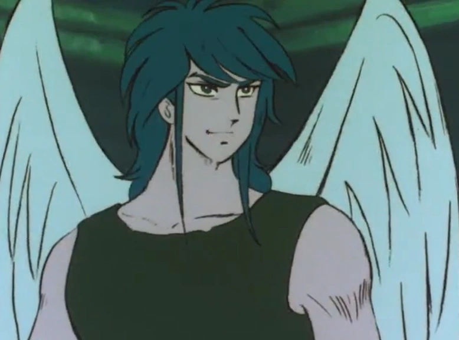
ガーニィ・ハレック (Gurney Halleck)
Gurney Halleck
Maestro de Armas • Campeón del Duelo Singular
Atril: Voz limpia, viril y caballeresca. Al batirse contra Kazuya debe palparse hermandad y respeto entre deportistas.
Cel oficial Toei Dōga (Ep. 9 y 17)
Pequeño Baam • Policía Secreta
Ep. 1, 5, 34 a 42
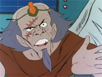
ゲロイヤー (Georiya)
Ministro Georiya
Jefe de Seguridad Imperial • Brazo Ejecutor del Regicidio
Atril: Servil con el poder, sádico con los indefensos y cobarde al verse acorralado. Su ajusticiamiento debe sonar patético.
Celuloide original Nippon Sunrise (1978)
Imperio Baam • Servidumbre de Paz
Ep. 13 a 16
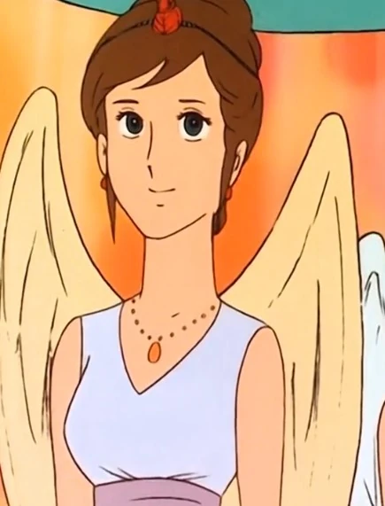
シンディ (Cindy)
Cindy
Doncella Personal y Amiga Íntima de Erika
Atril: Voz aterciopelada y tímida. Vence el terror visceral a la guerra por devoción pura a Erika.
Master telecine Toei Dōga (Ep. 13-16)
Pequeño Baam • Resistencia
Ep. 19
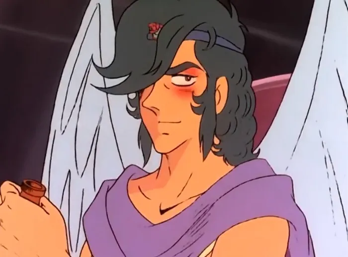
メルビィ (Prince Melubi)
Príncipe Melubi
Príncipe Imperial • Conspirador Clave Pro-Paz
Atril: El 'Hamlet' de Baam. En público finge ser un noble decadente y borracho; en secreto su voz es afilada, culta y decidida.
Model Sheet Toei Dōga (Episodio 19)
Imperio Baam • Cuerpo Médico
Ep. 9, 14, 16
ウォーリン (Dr. Uoorin / Walin)
Doctor Uoorin (Walin)
Jefe Médico del Castillo Submarino • Humanitario
Atril: Timbre clínico, ético y reposado. Encarna el juramento hipocrático atendiendo a heridos sin importar su bando.
Master broadcast Nippon Sunrise
Pequeño Baam • Jerarquía Espiritual
Ep. 42 a 44
ヤホバ (Archbishop Yahoba)
Gran Sacerdote Yahoba
Gran Patriarca Religioso de la Fe de Baam
Atril: Cadencia litúrgica, lenta y venerable. Su fingida sumisión a Olban oculta la furia santa de quien ve su templo profanado.
Celuloide original Toei Animation (Ep. 42-44)
Pequeño Baam • Rebelión Militar
Ep. 34
伝
1978 / 2026
ヒムレー (Himure)
Comandante Himure (Himre)
Oficial Subversivo • Portador de la Evidencia del Regicidio
Atril: Intensidad jadeante y urgente. Transmite la angustia de quien huye por el espacio con el documento que salvará a su hermano.
Master telecine Toei Video (Episodio 34)
Imperio Baam • Misión Utopía
Ep. 20 a 31
和
1978 / 2026
バランドーク (Barandook)
Gobernador Barandook
Comandante del Contingente Colonizador de Convivencia Pacífica
Atril: Tono reflexivo y noble. Contrasta frontalmente con la histeria belicista de Richter y Miwa.
Settei episódico Toei Dōga (Ep. 20)
Tierra • Científico Internacional
Ep. 20, 27
ダグラス・バンクス博士 (Dr. Douglas Banks)
Dr. Douglas Banks
Director del Instituto Científico de Nueva Zelanda
Atril: Humanista, reposado. Demuestra que no todos los humanos comparten la xenofobia del General Miwa.
Celuloide original Nippon Sunrise (Ep. 20 y 27)
Ejército Terrestre • Fuerzas Especiales
Ep. 1, 23, 40 a 44
鬼頭隊長 (Captain Kitō)
Capitán Kitō
Comandante de Operaciones de Asalto • Oficial de Campo
Atril: Voz áspera de soldado curtido. Pasa del odio homicida al despertar ético que le impide acatar órdenes de masacre.
Master televisivo Toei Dōga (1978)
Pequeño Baam • Subsuelo Popular
Ep. 38, 43, 44
カイヤ (Kaiya)
Kaiya
Portavoz de los Trabajadores y Esclavos de Pequeño Baam
Atril: Voz de mujer obrera, apasionada, enérgica y castigada por la escasez. Agitación popular genuina.
Settei secundarios Toei Animation (1978)
Tierra • Comunicaciones Daimobic
Ep. 2, 7, 22
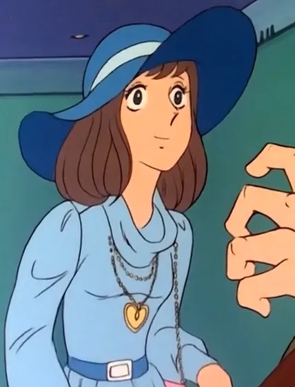
レイコ (Reiko)
Reiko
Operadora Central de Telemetría • Amor de Kyōshirō
Atril: Dicción castrense limpia en combate; modulación coqueta y cálida en sus interacciones con Kyōshirō.
Master televisivo Toei Dōga (Ep. 22)
Pequeño Baam • Policía Política
Ep. 35, 38
ザウロ (Zauro)
Comandante Zauro
Jefe de Ejecuciones y Purga Política de Olban y Georiya
Atril: Voz burocrática del terror de estado. Frialdad implacable desprovista de cualquier empatía.
Celuloide original Nippon Sunrise (Ep. 35 y 38)